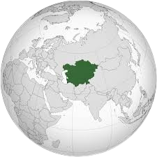
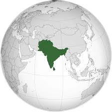

Energia na Ásia Central
Recursos Naturais e Potencial Energético
A Ásia Central é rica em recursos energéticos:
Cazaquistão:
Possui vastas reservas de petróleo, gás natural e é o maior produtor mundial de urânio. Além disso, destaca-se na produção de carvão e metais como ferro, cobre e alumínio.
Turcomenistão:
Detém uma das maiores reservas de gás natural do mundo, estimadas em US$ 6 trilhões. O gás turcomeno abastece mercados como a China e a Rússia.
Uzbequistão:
Rico em ouro, gás natural e carvão. É um dos maiores produtores de ouro do mundo.

Quirguistão:
Destaca-se pelas reservas de ouro e depósitos de metais raros, como o antimônio.
Infraestrutura e Cooperação Regional
Durante a era soviética, foi estabelecida uma rede integrada de energia na região:
Sistema de Energia Integrado da Ásia Central (IPS):
Permitindo o intercâmbio de eletricidade entre os países, com o Quirguistão e o Tajiquistão fornecendo energia hidrelétrica para o Uzbequistão, Cazaquistão e Turcomenistão durante o verão, e recebendo eletricidade gerada por carvão e gás desses países durante o inverno.
Energia Nuclear e Renovável
Energia Nuclear:
O Cazaquistão e o Uzbequistão estão investindo na construção de usinas nucleares para diversificar suas matrizes energéticas e alcançar a independência energética.
Leia mais sobre a energia nuclear no CazaquistãoEnergias Renováveis:
O Cazaquistão planeja aumentar a participação das fontes renováveis para 15% até 2030 e alcançar a neutralidade de carbono até 2060.
Leia mais sobre a renascença da Ásia CentralDesafios
Infraestrutura Obsoleta:
Muitas instalações de energia foram construídas durante o período soviético e necessitam de modernização.
Crescimento Demográfico:
A crescente população e urbanização aumentam a demanda por energia.
Coordenação Regional:
Diferenças nas prioridades de uso dos recursos hídricos e energéticos entre os países a montante e a jusante dos rios Amu Darya e Syr Darya.
Leia mais sobre os desafios na Ásia Central Energia na Ásia do Sul
Matriz Energética

Carvão e Gás Natural:
São as principais fontes de energia na região. A produção de eletricidade mais do que triplicará até 2050, com a energia nuclear aumentando sua participação, embora ainda representando uma fração modesta da matriz energética.
Energia Nuclear
Paquistão:
Possui um programa nuclear em expansão, com planos de aumentar significativamente sua capacidade de geração de energia nuclear até 2050.
Energias Renováveis

Desenvolvimento Variado:
Enquanto alguns países estão investindo em energias renováveis, a expansão de centrais a gás natural pode comprometer a transição para fontes de energia mais limpas.